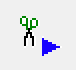
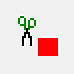
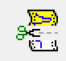
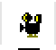
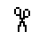

EMU Workflow Manual
How to Clip Seizures
Instructions for clipping and downloading seizure onset EDF files in Natus.
Before you begin
Use authorized Natus access and a designated workstation. Do not interrupt clinical review of files. The source notes that remote access can be used to clip files, but downloading data requires connection to a major workstation.
Clip the study
Prune the study of interest. Switch database to ICM and find the file of interest. You need to prune the start time after the patient's specific montage has been applied, so you know which electrode is which.
To standardize our seizure clips, please identify the start time of the seizure and mark it precisely using the UEO label. Then go exactly 5 minutes (300 seconds) prior to the onset, which will be the start of the clip. The easiest way to do this is to select the UEO annotation in Natus, hit Ctrl+G, and set the time to 5 minutes EARLIER, while keeping the seconds the same. (e.g. 14:34:45 becomes 14:29:45)
Click on

to mark the start time of the clip. You will be prompted to name your clip. Please name the clip in the following fashion: szXX (e.g., sz01, sz02, sz14)Where XX is the sequential seizure number for that patient’s ICM admission.
Do not clip or count subclinical/larval seizures for this purpose. Those can be labeled larval01, larval02 if you want to keep track similarly.
Do not count mapping seizures in your sequential count.
This standard format will allow us to process these files easily, as well as for better research.
Now move to the offset of the seizure annotation (UEE). Similarly to above, once you click on it and highlight it, use Ctrl + G and move to 5 minutes AFTER the offset, and then click

to mark the end of the clip.To make the actual clip, click on

. Unclick video
but make sure the epoch you want is selected under
. Please unselect any other epochs that you have previously clipped, so you’re only clipping the epoch of note. One clip should contain one seizure and one seizure only.Adapted from How to Clip Seizures_2026.docx. Internal access instructions, staff contact information, and workstation locations are omitted from this copy. The clipping instructions and toolbar icons are retained from the source.